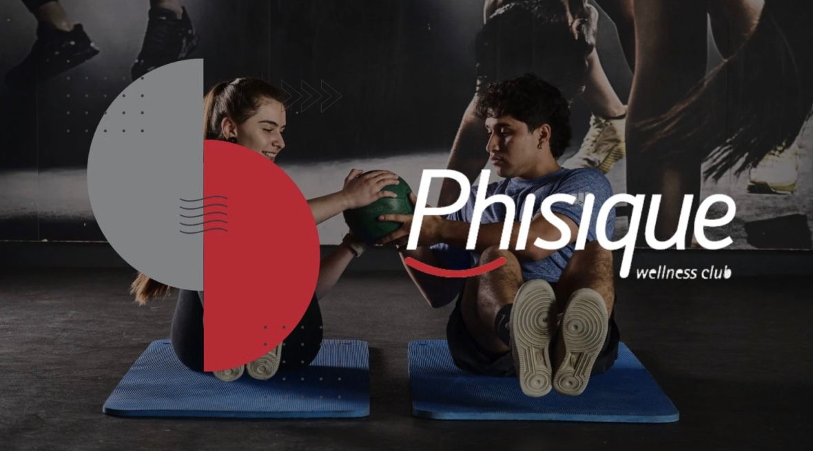
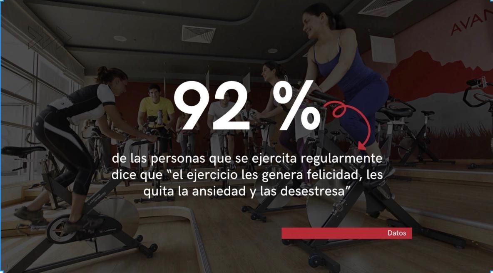
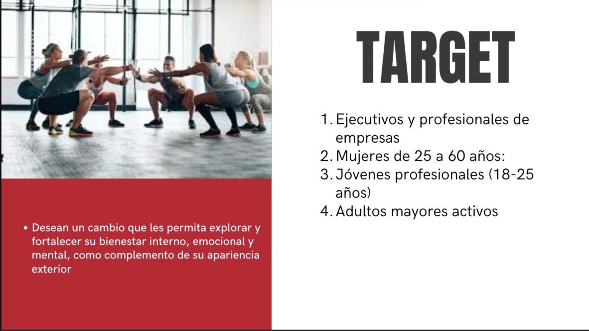
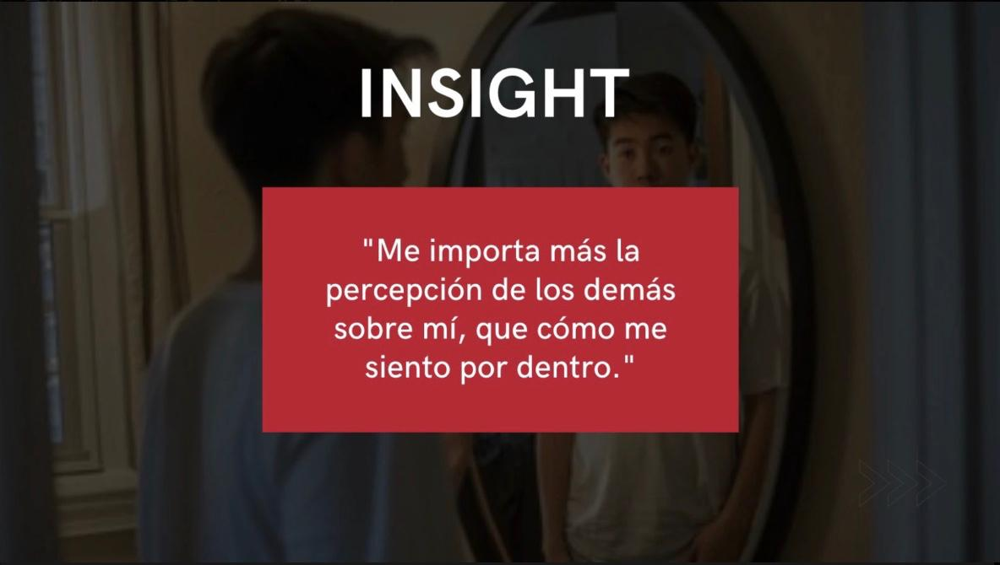
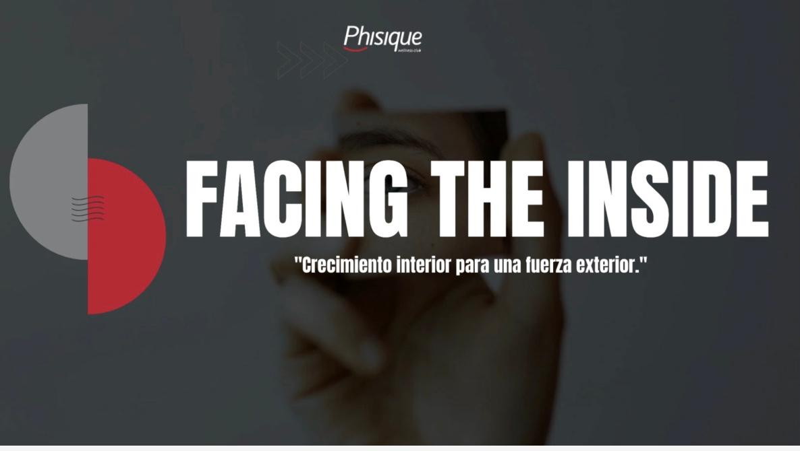
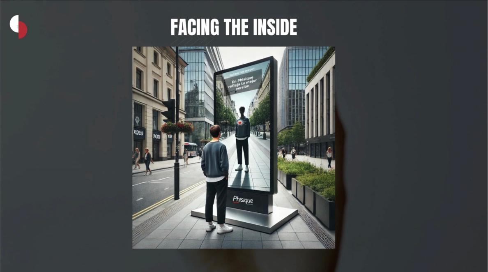
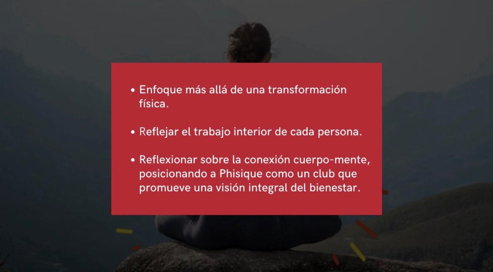
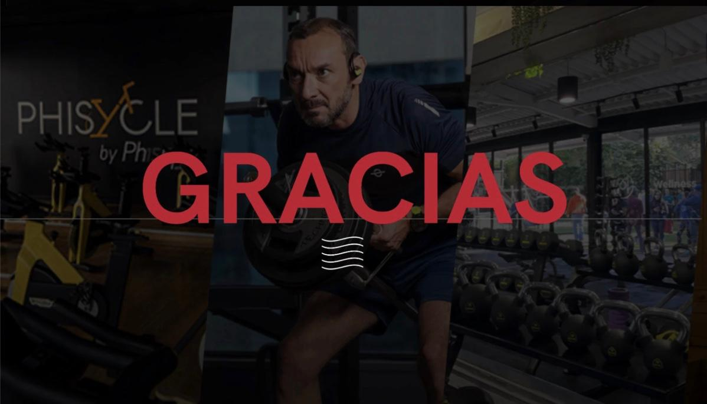

Facing the Inside es una campaña para PHISIQUE Wellness Club, la cual redefine el bienestar como un proceso integral: no se trata solo de transformar el cuerpo, sino de fortalecer lo que sucede dentro. Proponemos una evolución real del entrenamiento, donde el rendimiento físico nace de la conexión profunda entre mente y cuerpo.
Esta iniciativa invita a mirar hacia adentro para crecer hacia afuera: entrenar con intención, cuidar la salud mental, construir disciplina emocional y desarrollar un equilibrio interno que impulse resultados externos más sólidos y duraderos.